Wincode DMX Studio User Manual · a lighting console in the browser
1. What DMX Studio is
DMX Studio is a lighting console that runs in a web browser. You patch fixtures, build looks in a programmer, store them as groups, palettes and cues, add effects, and play everything back from faders. Its working method is that of professional consoles such as grandMA, ChamSys MagicQ, Avolites Titan, ETC Eos and Onyx, so what you learn here carries over.
The DMX it produces goes to the Wincode 3D simulator over a Virtual DMX cable, or to real fixtures through Art-Net, sACN or a DMX USB Pro widget. A show starts with one universe of 512 channels and can grow to 64 universes (32 768 channels).
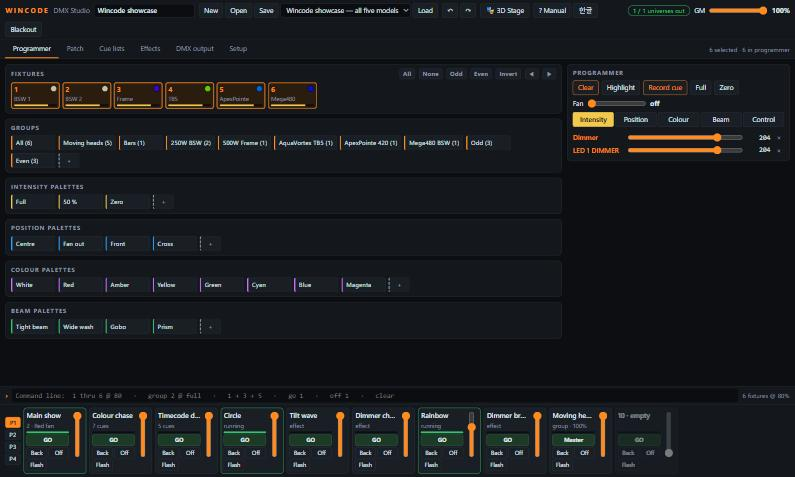
| Address | What |
|---|---|
| samcho93.github.io/wincodeDmxStudio | DMX Studio (nothing to install) |
| samcho93.github.io/wincodeMovingHead/stage.html | The 3D stage it controls |
Use Chrome or Edge. Web Serial (DMX USB Pro) and Web MIDI are not available in every browser.
2. Quick start
Prefer to learn by doing? The tutorials walk through six complete tasks — five with the built-in examples, one with fixtures from the library.
The first time you open DMX Studio it loads the example Wincode showcase: six fixtures, palettes, three cue lists, five effects and a page of playbacks. Five minutes with it shows the whole method.
- Open the 3D stage. Press 🎭 3D Stage in the top bar. A second window opens with the six fixtures; they follow the console from now on. Put the two windows side by side.
- Play a cue list. At the bottom, press GO on the playback Main show. The fixtures fade to cue 1. Press GO again for cue 2, and so on.
- Take control by hand. Type
1 thru 6 @ 50in the command line and press Enter: all six fixtures go to 50 %. What you set by hand is in the programmer and overrides the playback. - Use a palette. Click the colour palette Blue. Each fixture turns blue in its own way — a colour wheel on one, CMY on another, RGB on the bar.
- Record it. Press Record cue: the look becomes the next cue of the current cue list.
- Let go. Press Clear (or Esc). The programmer empties and the playback is back in charge.
3. The screen
| Area | What is there |
|---|---|
| Top bar | Show name · New / Open / Save · example list and Load · undo / redo · 3D Stage · Manual · output status · grand master (GM) · Blackout |
| Tabs | Programmer · Patch · Cue lists · Effects · DMX output · Setup. On the right: how many fixtures are selected and how many are in the programmer. |
| Work area | The selected tab. |
| Command line | Typed commands (section 12). The answer appears on the right. |
| Playbacks | Four pages (P1–P4) of ten faders. Always visible, whatever tab is open. |
The pill in the top bar shows the output: 1 / 1 universes out in green means every universe that has a line is being sent; red tells you what is missing (bridge offline, serial not connected).
4. Patch
The patch says which fixture is at which DMX address. Everything else — selections, palettes, cues — refers to fixtures, not to addresses, so you can re-address a fixture without breaking a show.

| Column | Meaning |
|---|---|
| No | Fixture number: what the command line and the fixture tiles use. Must be unique. |
| Name | Free text, shown on the tile. |
| Fixture / Mode | The profile and its channel mode. Changing the mode changes the footprint. |
| Universe / Address | Where the first channel is (1–512). |
| Channels | First – last address and the footprint. overlap in red means two fixtures share channels or the fixture runs past 512. |
| ✕ | Remove from the patch (and from every group). |
Patching fixtures
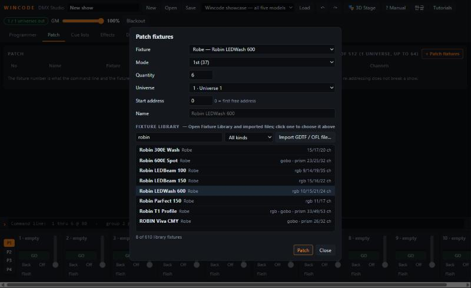
- Press + Patch fixtures.
- Choose the fixture and its mode. The number of channels is shown next to each mode. The Fixture list holds the Wincode and generic profiles; for any other fixture, search the fixture library below the form and click it (chapter 17).
- Enter the quantity. Leave Start address at 0 to take the first free address.
- Press Patch. The fixtures are numbered on from the highest number in use and addressed one after another.
5. Selecting fixtures
You always select first and set values second. The selection has an order — the order in which you picked the fixtures — and Fan and the effects use it.
| How | What it does |
|---|---|
| Click a tile | Selects that fixture alone. |
| Ctrl-click or Shift-click a tile | Adds it to the selection, or removes it. |
| All None Odd Even Invert | Whole rig, nothing, every other fixture, the opposite of the selection. |
| ◀ ▶ or ← → | Previous / next fixture — step through a rig while focusing. |
| Click a group | Selects its fixtures; Ctrl-click adds them. |
| Command line | 1 thru 6, 1 + 3 + 5, group 2, 6 thru 1 (reversed order). |
A tile shows the fixture number, its name, a yellow bar for its intensity and a dot in its present colour. An orange frame means selected; a brown background means the fixture has values in the programmer.
6. The programmer
The programmer is your pair of hands. Whatever you set here goes straight to the output and wins over every playback, until you clear it. Its content is what gets recorded into palettes and cues.
Attributes are sorted into five groups, as on a console:
| Group | Attributes |
|---|---|
| Intensity | Dimmer |
| Position | Pan, tilt, pan / tilt speed |
| Colour | Colour wheel, CMY, RGB, CTO, colour macros |
| Beam | Shutter / strobe, zoom, focus, gobos, prisms, frost, framing blades |
| Control | Reset, lamp and other service channels |
Intensity
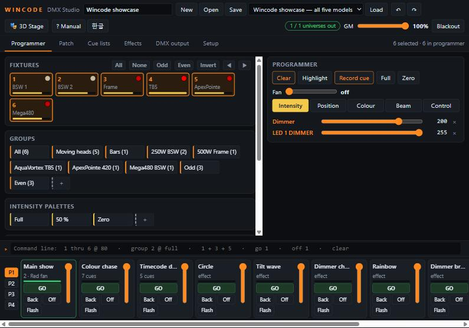
Each attribute has a slider, its value (0–255) and a × that releases it from the programmer. Full and Zero set the dimmer of the selection in one press. Shutters rest open, so raising the dimmer is enough to get light.
Position

Drag in the pad to move the selection. Fixtures with a fine channel are driven in 16 bits automatically — you never set a fine channel yourself.
Colour

The hue bar and the swatches work on every fixture that can mix colour: the studio sends RGB to an RGB fixture and the matching CMY values to a CMY fixture. Fixtures with only a colour wheel use the Colour slider or its function list.
Beam and the function lists
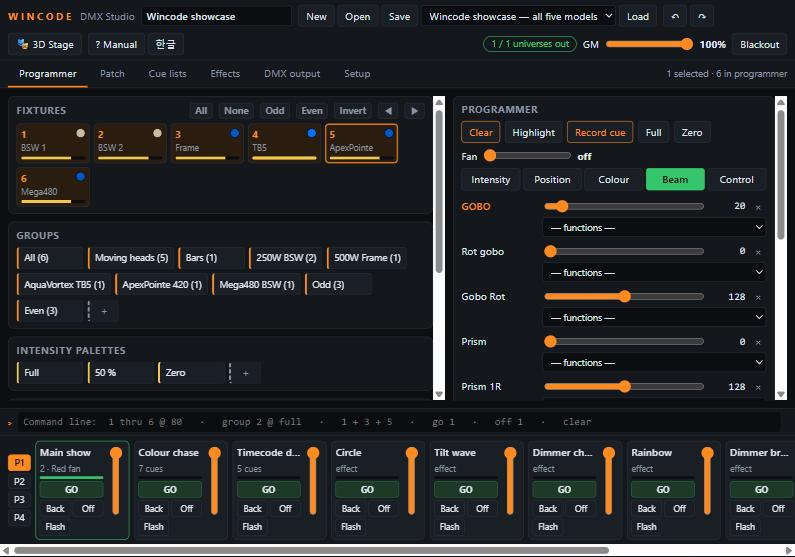
A channel that does several things — a gobo wheel, a shutter, a prism — has a list — functions — under its slider, taken from the fixture's manual. Choosing an entry sets a value inside that range.
Fan, Highlight, Clear
| Control | What it does |
|---|---|
| Fan | With Fan at, say, ±30, the next value you set is spread across the selection: the first fixture gets 30 less, the last 30 more, the ones between in equal steps. Set pan with Fan on and the beams open like a fan. Put the slider back to off afterwards. |
| Highlight (H) | The selected fixtures go to full intensity while it is on — to see which fixture you are working on. Nothing is recorded. |
| × on an attribute | Releases that attribute only. |
| Clear (Esc) | First press empties the programmer; a second press clears the selection. |
| Record cue (R) | Stores the programmer as the next cue (section 8). |
7. Groups and palettes
Groups and palettes are the building blocks that make programming fast. Build them once, then make cues by clicking.
Groups
- Record: select fixtures, then click the dashed + at the end of the Groups pool.
- Use: click the group (Ctrl-click adds to the selection). The order of the fixtures is kept.
- Edit: right-click → rename, Update from selection, or delete.
Palettes
There is one pool per kind: intensity, position, colour and beam. A palette holds the values of that kind for each fixture — and applies to any other fixture of the same type and mode as well, so a colour palette made on one Mega480 works on all of them.
- Record: set the values in the programmer, then click + in the pool of that kind. Only values of that kind are taken.
- Apply: select fixtures, click the palette. Its values go into the programmer.
- Edit: right-click → rename, Update from programmer, or delete.
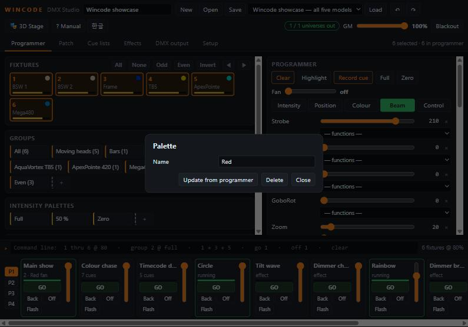
8. Cue lists
A cue list is a sequence of looks. A cue stores the programmer's values with a fade time; pressing GO moves from one cue to the next.

Recording a cue
- Open the Cue lists tab and click the list to record into (or let the studio create Main).
- Build the look in the programmer.
- Press Record cue (R). The cue is added at the end, with a 2-second fade. If the list is not on a playback yet, it is put on the first free one.
- Press Clear and build the next look.
The cue table
| Column | Meaning |
|---|---|
| No | Cue number; decimals are allowed (2.5 goes between 2 and 3). The list sorts itself. |
| Fade s | Time to fade into the cue. |
| Delay s | Wait after GO before the fade starts. |
| Trigger | GO button: waits for you. Follow: starts as soon as the previous cue has faded in. Wait: starts the given seconds after that. |
| Time s | Timecode (section 9). Empty = not timed. |
| Effect | An effect that runs while this cue is active (section 10). |
| Content | How many fixtures and values the cue holds. |
| ▶ | Go straight to this cue. |
| Load | Copies the cue into the programmer so that you can change it. |
| Update | Merges the programmer into this cue. |
| ✕ | Deletes the cue. |
Tracking
With Tracking on (the default, as on a theatre desk) a cue only needs to hold what changes: every value set by an earlier cue stays until a later cue changes it. So “Red fan” can hold just a colour and a position, and the intensity of cue 1 carries through. With Tracking off, each cue stands alone and anything it does not contain goes back to its default.
Loop
With Loop on, GO on the last cue returns to the first. A looping list whose cues use Wait triggers is a chase that runs by itself — the example Colour chase is built that way.
Editing a cue
- Press Load on the cue.
- Change what you want in the programmer.
- Press Update on the same cue, then Clear.
9. Timecode and audio
A cue list can run against the clock: give each cue a Time in seconds from the start, and press ▶ Run. The cues fire by themselves at their times.

- 🎵 Add audio attaches a sound file. It is played with the run and becomes the clock, so the lights stay in step with the music.
- The audio file is stored in this browser only; it is not part of the show file. Add it again on another computer.
- While running, the playback shows the elapsed time. ■ Stop ends the run.
10. Effects
An effect generates values continuously instead of holding them still: a dimmer chase, a circle, a rainbow.
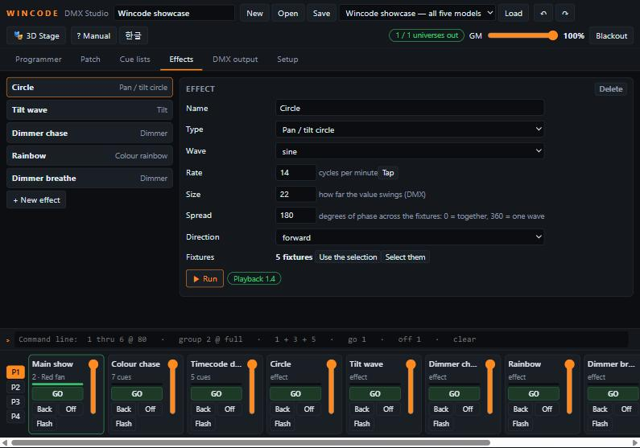
| Setting | Meaning |
|---|---|
| Type | Dimmer · Pan · Tilt · Pan / tilt circle · Pan / tilt figure 8 · Colour rainbow · Zoom · Focus |
| Wave | The shape of one cycle: sine, triangle, ramp up, ramp down, square, pulse, chase (one fixture at a time), random. |
| Rate | Cycles per minute. Tap twice in time sets it. |
| Size | How far the value swings, in DMX steps. |
| Centre | Dimmer only: the level it swings around. |
| Spread | Phase across the fixtures. 0 = all together, 360 = one complete wave across the selection, 720 = two. |
| Direction | Forward or backward. |
| Fixtures | Use the selection takes the current selection, in its order. |
Position, zoom and focus effects move around the value the fixture already has, so the same circle works wherever the fixture points. Dimmer and rainbow effects set the value outright.
Making and running an effect
- Select the fixtures.
- Press + New effect and set its type.
- Press ▶ Run: the effect is put on a free playback and started. Its fader sets its size.
To make an effect part of a cue, choose it in the cue's Effect column: it then runs for as long as that cue is active.
11. Playbacks
The playbacks are how a show is run. There are four pages of ten; each playback holds a cue list, an effect or a group master.

| Control | What it does |
|---|---|
| GO | Cue list: next cue. Effect: start. |
| Back | Previous cue, with a short fade. |
| Off | Releases the playback: its values leave the stage. |
| Flash | While held: the playback at full, whatever its fader. If it was off, it is on only while you hold. |
| Fader | Cue list: the intensity of this playback. Effect: its size. Group master: the intensity limit of that group. Raising a fader from zero starts the playback; pulling it to zero releases it. |
| P1–P4 | Playback pages. |
Assigning a playback
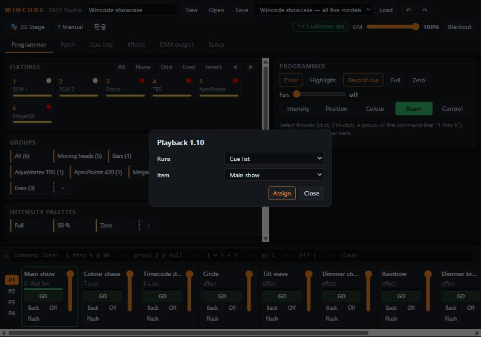
Click the name (or empty). Choose what it runs — cue list, effect or group master — and the item, then Assign. Clear empties the slot.
Grand master and blackout
GM scales every intensity channel of the rig. Blackout (B) takes all intensities to zero at once; positions, colours and gobos keep running, so the look is back the moment you release it.
12. Command line
Press Enter to jump to the command line, type, and press Enter again.
| Type | Result |
|---|---|
1 thru 6 | Select fixtures 1 to 6 (t, - and > work too) |
6 thru 1 | The same fixtures in reverse order |
1 + 3 + 5 | Select fixtures 1, 3 and 5 |
group 2 or g 2 | Select the second group of the pool |
1 thru 6 @ 80 | Select and set the intensity to 80 % |
group 2 @ full | Group 2 at 100 % |
@ 30 | The current selection at 30 % |
go 1 · back 1 · off 1 | GO, Back, Off on playback 1 of the current page |
clear | Same as the Clear button |
13. DMX output monitor
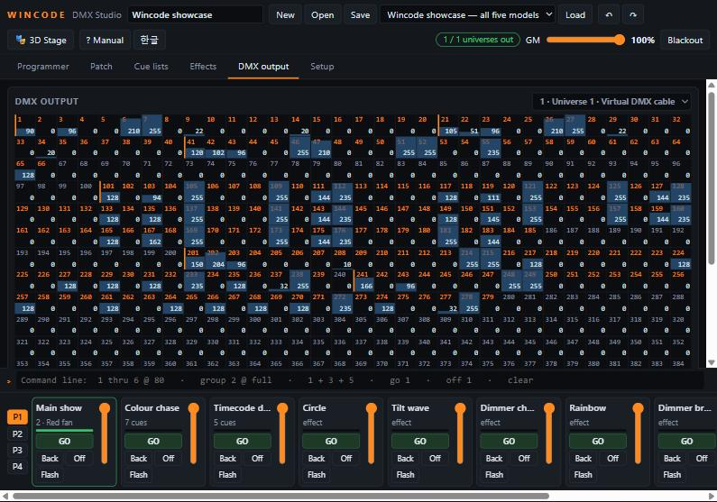
The monitor shows what is on the wire right now, after every merge and the grand master. Pick the universe at the top right. Hover over a cell to see which fixture and which function it belongs to. Use it to check a patch and to find out why a fixture does not react.
14. Universes and lines
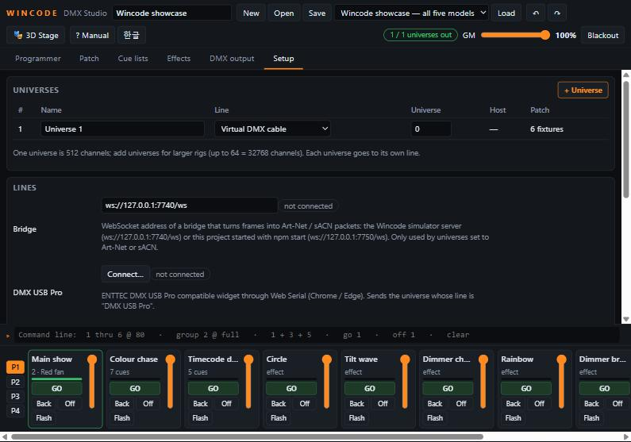
Each universe is sent on its own line:
| Line | Use it for | Needs |
|---|---|---|
| Off | A universe you are only preparing | — |
| Virtual DMX cable | The Wincode 3D simulator | Both pages opened from the same site (section 15). Universe is the cable universe the simulator listens on, 0 for the first. |
| Art-Net | Art-Net nodes and fixtures | A bridge. Universe is the Art-Net port address (0-based); Host the node's IP, the broadcast address, or 127.0.0.1. |
| sACN / E1.31 | sACN nodes and fixtures | A bridge. Universe 1–63999; Host an IP address, or multicast. |
| DMX USB Pro | One universe through an ENTTEC-compatible USB widget | Chrome or Edge. Press Connect… and choose the port. |
The bridge
A web page cannot send network packets itself, so Art-Net and sACN go through a small program — the bridge — that the page talks to. Either of these is a bridge:
- The Wincode simulator's server:
ws://127.0.0.1:7740/ws - DMX Studio's own server, started with
npm startin its folder:ws://127.0.0.1:7750/ws
Enter the address under Lines → Bridge. The pill next to it says connected once a universe is set to Art-Net or sACN and the bridge answers.
More universes
+ Universe adds 512 channels at a time, up to 64 universes. The last universe can be removed with ✕ when nothing is patched on it.
MIDI
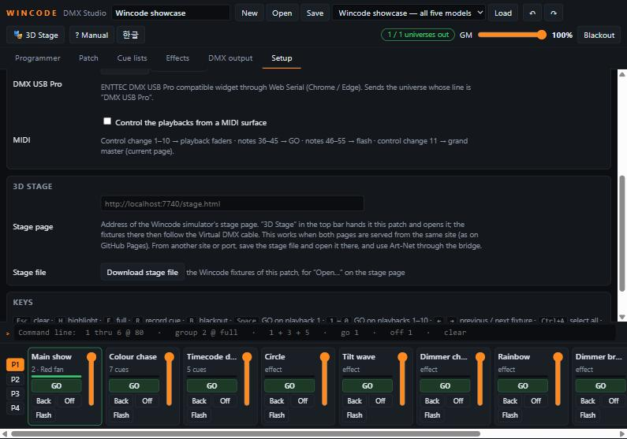
Tick Control the playbacks from a MIDI surface and allow MIDI access when the browser asks. The mapping is fixed (section 18) and follows the current playback page.
15. The 3D simulator
DMX Studio and the Wincode simulator are two programs that work as one: the studio is the console, the simulator's stage is the rig.

- Patch your fixtures in DMX Studio (or load an example). Wincode fixtures appear on the stage with their own 3D model, library fixtures with a body generated from their kind and size; generic profiles are not shown.
- Press 🎭 3D Stage. The studio hands its patch to the stage page and opens it: the same fixtures, at the same addresses, appear on the stage.
- Work in the studio. The stage follows the Virtual DMX cable while it is not playing a show of its own.
From the simulator, the 🎚 DMX Studio button opens the studio.
- On the web: both are on
samcho93.github.io; nothing to do. - On your own computer: start the simulator (
npm startin its folder) and open the studio athttp://127.0.0.1:7740/studio/. The simulator's server serves the studio from the folder next to it. - Otherwise: use Setup → Download stage file, open that file on the stage page, and send Art-Net through the bridge.
After you change the patch, press 🎭 3D Stage again to hand the new patch over. Generic fixtures have no 3D model and do not appear on the stage.
16. Show files, undo, examples
| Button | What it does |
|---|---|
| Save | Downloads the show as name.wdx.json. |
| Open | Opens a show file. |
| New | Starts an empty show with one universe. |
| Load (next to the example list) | Replaces the show with the chosen example. |
| ↶ ↷ | Undo and redo, up to 60 steps (Ctrl+Z, Ctrl+Y). New, Open and Load can be undone too. |
The show is also saved in the browser after every change and comes back when you reopen the page. That copy lives in this browser on this computer only — use Save for anything you want to keep.
The examples
| Example | Rig |
|---|---|
| Wincode showcase — all five models | 2 × 250W BSW, 500W Frame, AquaVortex TB5, ApexPointe 420, Mega480 (229 channels) |
| 250W BSW × 4 · 500W Frame × 4 · ApexPointe 420 × 4 · Mega480 × 4 | Four of one model |
| AquaVortex TB5 × 2 | Two bars, ten heads |
| Large rig — 48 fixtures, 5 universes | 16 Mega480, 16 ApexPointe 420, 8 TB5, 8 BSW (2088 channels) |
Every example has groups, a full set of palettes, the cue lists Main show, Colour chase and Timecode demo, effects, and a first page of playbacks.
17. Fixture library
| Wincode fixture | Modes | Notes |
|---|---|---|
| 250W BSW (WOP-LM1012B) | 17CH · 20CH | Colour wheel, two gobo wheels, 3-facet prism, zoom 6–26° |
| 500W Frame (WOP-LM500WF) | 26CH | CMY, CTO, colour wheel, four framing blades, zoom 6–48° |
| ApexPointe 420 | 39CH | CMY, 13-colour wheel, two gobo wheels, two prism wheels, continuous pan |
| Mega480 BSW (WOP-M480BSW) | 34CH · 39CH | CMY, colour wheel, two gobo wheels, two prism wheels |
| AquaVortex TB5 (WOP-AVortex TB5) | 21 · 41 · 71 · 75 · 85 · 170CH | Five heads on a bar, RGBL, pixel rings |
Generic profiles: Dimmer · RGB · RGBW · RGBAW + UV · Moving Head Spot · Moving Head Wash · Moving Head CMY · Scanner · Dimmer pack (2–48 channels).
The Wincode profiles carry the function table of every channel and its resting value, taken from the fixtures' manuals. On a multi-head fixture such as the TB5, an attribute you set applies to all its heads; the effects treat each head as its own fixture.
Fixtures of other manufacturers
The lower half of the Patch fixtures dialog is a library of 610 fixtures from 127 manufacturers — the Open Fixture Library, an open project under the MIT licence, bundled with the studio.
- Search. Type part of the name or the manufacturer ("robin", "mac aura", "cameo par"). The list on the right of each row shows what the fixture has (rgb, gobo, prism) and the sizes of its channel modes. All kinds narrows the list to moving heads, colour changers, pixel bars and so on.
- Click the fixture. It is loaded and selected in the Fixture field at the top, with its modes in Mode.
- Set mode, quantity and address, and press Patch — exactly as for a Wincode fixture.
A fixture that is not in the library: press Import GDTF / OFL file…, or drop the file on the dialog. Two formats are read:
| Format | What it is |
|---|---|
GDTF (.gdtf) | The open fixture format of the lighting industry (DIN SPEC 15800), read by grandMA3, Vectorworks, Capture and others. Manufacturers publish their fixtures at gdtf-share.com. |
Open Fixture Library (.json) | A fixture file from open-fixture-library.org, for instance one you wrote in its fixture editor. |
An imported fixture is marked imported, is selected at once, and stays in the library of this browser.
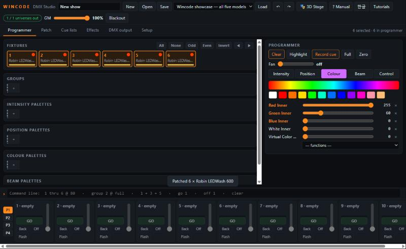
A library fixture works like any other in the studio:
- Its channels are sorted into the attribute groups Intensity · Position · Colour · Beam · Control from what each channel does.
- Colour mixing is found (RGB or CMY), so the colour picker, the swatches and the Rainbow effect work. A fixture with several colour cells — rings, pixels — has each cell treated as its own head.
- Channels with several functions (shutter, colour wheel, gobo wheel, macros) have a functions list with every range and its name.
- The shutter rests open, pan and tilt rest centred, so raising the dimmer gives light.
Library data comes from volunteers and manufacturers; nothing in it was checked against the fixtures' manuals here. Check the channel list of a fixture against its manual before a show.
18. Keys and MIDI
| Key | Action |
|---|---|
| Esc | Clear (programmer, then selection) |
| H | Highlight on / off |
| F | Selection at full |
| R | Record cue |
| B | Blackout on / off |
| Space | GO on playback 1 |
| 1 … 9, 0 | GO on playbacks 1 … 9, 10 |
| ← → | Previous / next fixture |
| Ctrl+A | Select all |
| Ctrl+Z / Ctrl+Y | Undo / redo |
| Enter | Go to the command line |
The keys work while no text field has the focus.
| MIDI message | Action (current playback page) |
|---|---|
| Control change 1–10 | Playback faders 1–10 |
| Control change 11 | Grand master |
| Note 36–45 | GO on playbacks 1–10 |
| Note 46–55 | Flash on playbacks 1–10 (while the note is held) |
19. How values are merged
Several things can want the same channel at once. The studio decides in this order, lowest to highest:
- Defaults. A channel nothing controls rests at its default: shutter open, pan and tilt centred, the rest at zero.
- Playbacks. For intensity, the highest value of all running playbacks wins (HTP), each scaled by its fader. For everything else, the playback started last wins (LTP).
- Effects act on top of that.
- The programmer overrides all of the above.
- Highlight forces the selection to full.
- Group masters limit the intensity of their groups.
- Grand master and blackout scale every intensity.
20. Troubleshooting
| What you see | What to check |
|---|---|
| The 3D stage does not react | Are both pages opened from the same site (section 15)? Is the universe's line Virtual DMX cable? Is the stage playing its own show — press its Stop. After a patch change, press 🎭 3D Stage again. |
| A playback runs but there is no light | Is its fader up? Is the grand master up and Blackout off? Is a group master pulled down? Does the programmer hold the dimmer at zero — press Clear. |
| A cue does not change something | The programmer still holds that attribute (orange). Press Clear. |
| Values stay after a cue | That is tracking: a later cue must change them, or switch Tracking off for the list. |
| The output pill is red | “bridge offline”: the bridge address is wrong or the bridge program is not running. “serial not connected”: press Connect… in Setup. |
| A palette does nothing on a fixture | The palette has no values for that type of fixture. Apply it to a fixture it was recorded on, or record it again with that fixture in the programmer. |
| “overlap” in the patch | Two fixtures share addresses, or one runs past 512. Change an address or move a fixture to another universe. |
| The show is gone after reopening | The browser copy belongs to one browser on one computer and is lost when site data is cleared. Keep show files with Save. |
| No audio with the timecode run | The audio file is stored per browser: add it again with 🎵 on this computer. |
Wincode DMX Studio · github.com/samcho93/wincodeDmxStudio